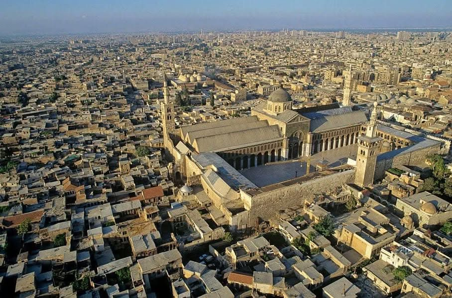

শাইখুল ইসলাম ইবনু তাইমিয়া রাহ. বলেন
৯ ডিসেম্বর, ২০২৪
শাইখুল ইসলাম ইবনু তাইমিয়া রাহ. বলেন—
"নাবি আলাইসিস সালাম শামের অধিবাসীদের বিশেষ মর্যাদা দিয়েছেন; কারণ, তারা সর্বদা আল্লাহর বিধান পালনে দৃঢ় থাকবে এবং কিয়ামত অবধি 'বিজয়ী দল' তাদের মধ্যেই থাকবে। এটি এমন এক স্থায়ী ও অবিচ্ছিন্ন বিষয়ের সংবাদ, যা তাদের মাঝে শক্তি ও সংখ্যাগরিষ্ঠতার সঙ্গে বিদ্যমান থাকবে। আর এ বৈশিষ্ট্য শাম ব্যতীত অন্যকোনো ইসলামি অঞ্চলের জন্য প্রযোজ্য নয়।"
والنبي ﷺ ميز أهل الشام بالقيام بأمر الله دائما إلى آخر الدهر وبأن الطائفة المنصورة فيهم إلى آخر الدهر فهو إخبار عن أمر دائم مستمر فيهم مع الكثرة والقوة وهذا الوصف ليس لغير الشام من أرض الإسلام.
[মাজমুউল ফাতাওয়া— ৪/৪৪৯]
শাইখুল ইসলাম ইবনু তাইমিয়া রাহ. বলেন—
"নাবি আলাইসিস সালাম শামের অধিবাসীদের বিশেষ মর্যাদা দিয়েছেন; কারণ, তারা সর্বদা আল্লাহর বিধান পালনে দৃঢ় থাকবে এবং কিয়ামত অবধি 'বিজয়ী দল' তাদের মধ্যেই থাকবে। এটি এমন এক স্থায়ী ও অবিচ্ছিন্ন বিষয়ের সংবাদ, যা তাদের মাঝে শক্তি ও সংখ্যাগরিষ্ঠতার সঙ্গে বিদ্যমান থাকবে। আর এ বৈশিষ্ট্য শাম ব্যতীত অন্যকোনো ইসলামি অঞ্চলের জন্য প্রযোজ্য নয়।"
والنبي ﷺ ميز أهل الشام بالقيام بأمر الله دائما إلى آخر الدهر وبأن الطائفة المنصورة فيهم إلى آخر الدهر فهو إخبار عن أمر دائم مستمر فيهم مع الكثرة والقوة وهذا الوصف ليس لغير الشام من أرض الإسلام.
[মাজমুউল ফাতাওয়া— ৪/৪৪৯]
